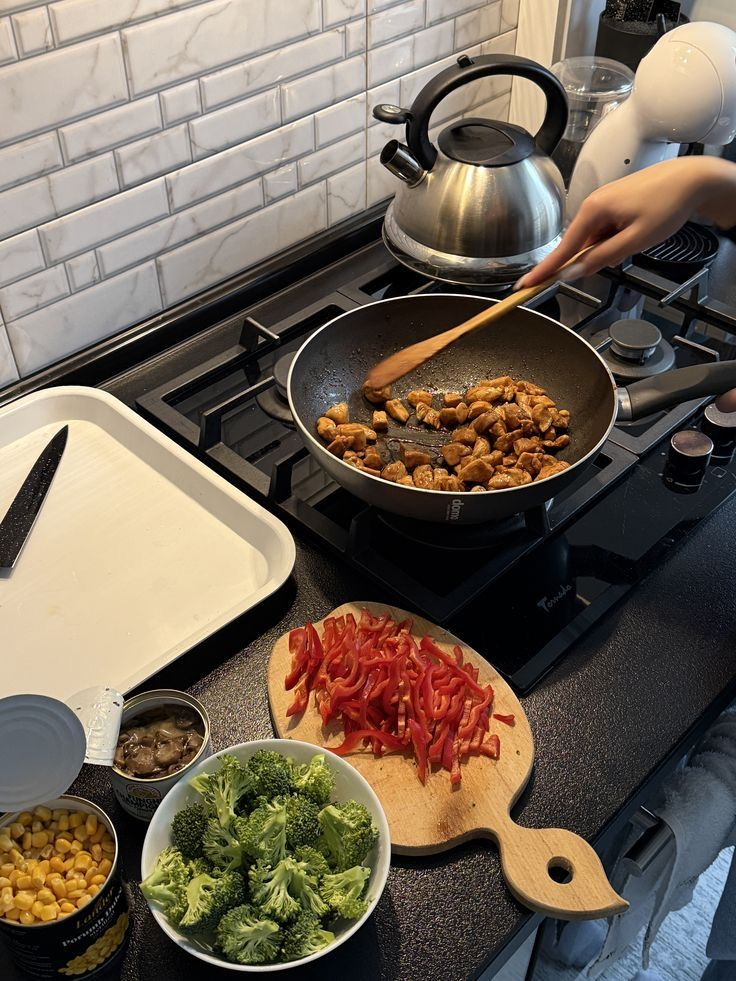
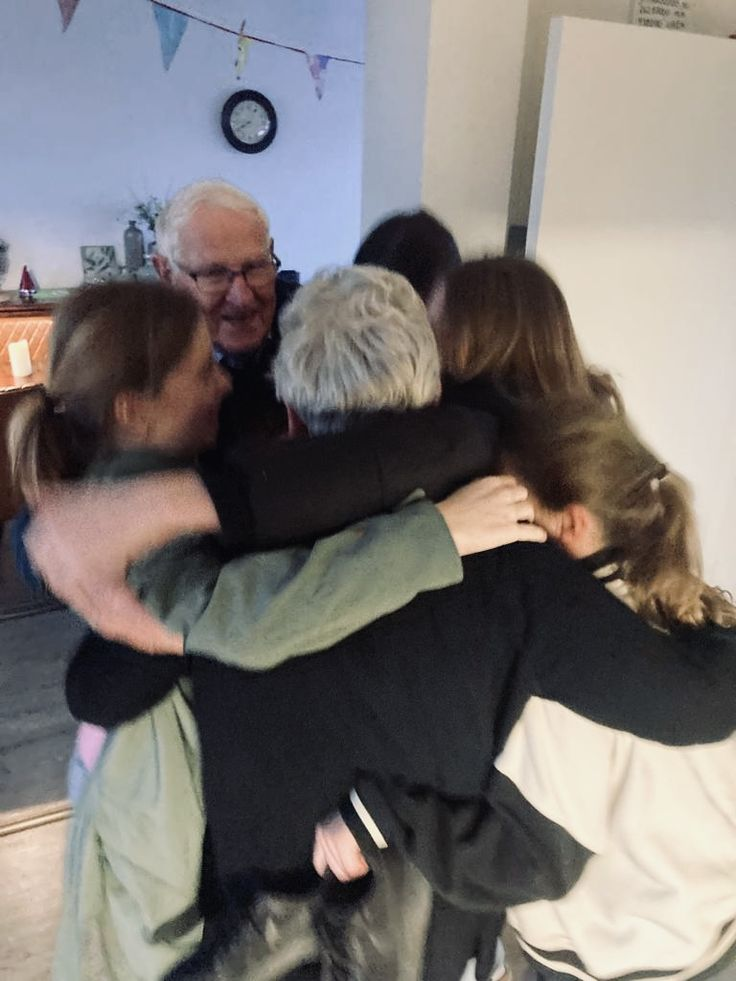
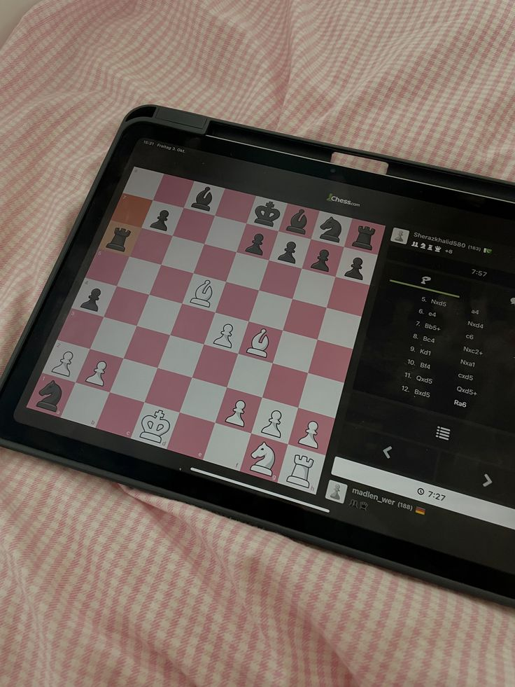
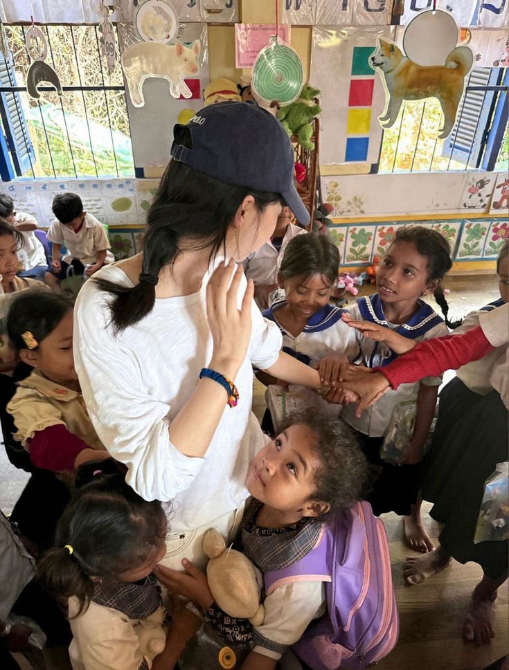

Community & Connection
From the heart of the home to the digital board, these activities keep me connected.

Cooking
I find joy in preparing meals for others. Cooking is a creative process where I can experiment with flavors and textures, much like how I approach designing a website layout.

Playing with Family
Spending quality time with my family is my top priority. Whether it's playing games or simply sharing stories, these moments provide the support and happiness that fuel my ambitions.

Online Chess
I love the strategic challenge of online chess. It sharpens my critical thinking and patience, teaching me to anticipate several moves ahead—a skill that is incredibly useful in administrative planning.

Volunteering
Giving back to the community in Mabalacat City is important to me. Volunteering allows me to apply my leadership and teamwork skills to help others and make a positive impact.